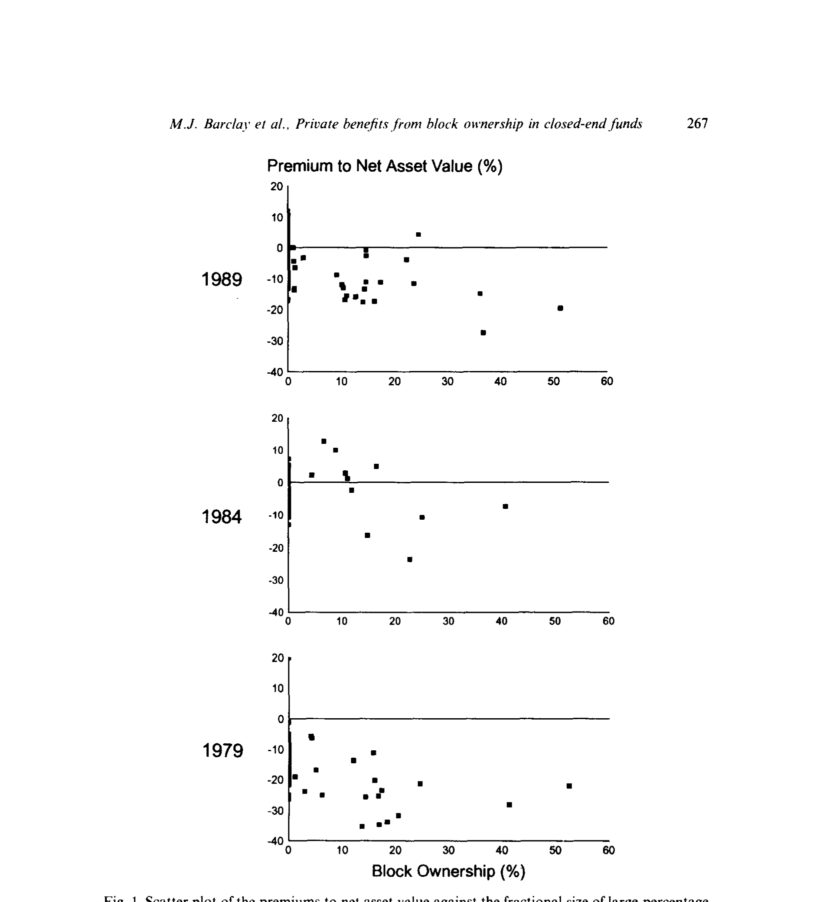
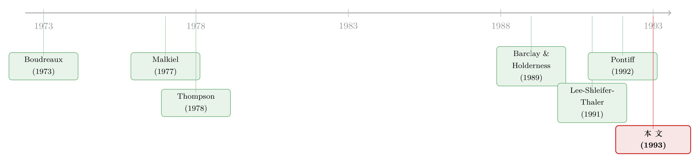

大股东不开门：封闭式基金的折价，原来是「私利」的影子
本文读的是 Barclay, Holderness & Pontiff (1993, Journal of Financial Economics)：封闭式基金里管理层持股越多，折价反而越大——有大股东的基金平均折价 14.2%，没有大股东的只有 4.1%。作者把这道反常关系归结为大、小股东之间的利益冲突：大股东靠投票权攫取「控制权私利」，为保住这些私利而否决「开放」基金的提案，于是折价长期存在。
1 一道「本该被套利掉」的折价
先说一个让人不太舒服的事实。
封闭式基金 (closed-end fund) 是一种发行固定份额、份额在二级市场上交易的基金。它有一个「教科书级」的怪异之处：基金份额的市价，常年低于它所持有资产的净值 (net asset value, NAV)。这个差额叫折价 (discount)。论文里把溢价定义为「(市价 − 净值) / 净值」，折价就是它乘以 −1。
折价为什么怪？因为它看上去是一顿摆在桌上、却没人去吃的「免费午餐」。只要把基金开放 (open-ending)——也就是让份额能按净值随时申赎——或者干脆清算掉，折价当场就该消失，持有人立刻就能赚到这块差额。既然如此，为什么基金常年不开放、折价常年不消失？
过去最流行的回答，是一个代理冲突 (agency conflict) 的故事，但它讲的是「股东 vs. 经理」：如果经理几乎不持有基金份额，那么消除折价对他没什么好处，反倒可能因为基金被开放而丢掉饭碗；于是经理出于私心抵制开放，折价就赖着不走。
请注意这个故事有一个可以被证伪的预言：按它的逻辑，经理持股越多，他和外部股东的利益就越一致，他就越有动力去消除折价——所以折价应该随管理层持股上升而下降。
接着，一个自然的问题是：数据真的这样吗？
作者拿 1979、1984、1989 三个年份的美国封闭式基金做了检验，结果干净利落地把这个预言钉死在了墙上——符号是反的。
2 反转：持股越集中，折价越大
先看最直白的描述统计。在全样本里，有大股东的基金平均折价 14.2%，没有大股东的基金平均折价只有 4.1%，差异在 0.01 水平上显著。如果只看股票型基金（剔除税收因素更干净的债券型），对比是 15.2% 对 8.2%，同样在 0.01 水平显著。
而且这不是「有没有」的二元差别，而是连续的、单调的关系：大股东持股比例越高，折价越深。论文的图 1 把三年的散点图叠在一起，最刺眼的一条规律是——凡是友好大股东持股超过 30% 的基金，无一例外都在大幅折价交易。

Figure 1: Scatter plot of the premiums to net asset value against the fractional size of large-percentage
这就把开头那个故事彻底掀翻了。持股最集中的那些人，本来最有能力、也最有动机投票去开放基金、吃下那块折价；可他们偏偏不动手，而且他们在的地方折价反而最深。
于是真正关键的一步来了：为什么手握控制权的人，宁愿守着一只「打折」的基金，也不肯去开放它？
作者的答案是把代理冲突的主角换了一对——不是「股东 vs. 经理」，而是「大股东 vs. 小股东」。大股东能用投票权为自己攫取一份不向其他股东分配的控制权私利 (private benefits of control)。开放基金固然能立刻抬高他手里份额的价值，但同时也会断掉这份私利。两相权衡，他选择否决任何开放提案。于是折价持续存在——不是因为没人能消除它，而是因为能消除它的人，故意不去消除。
（控制权私利不是封闭式基金独有的现象。关于「在法律缺位时大股东到底能从公司里拿走几成」，可参见《拍卖桌上量出来的「掏空」》；关于「这份私利到底值多少钱、怎么从一桩大宗股权交易里把它解出来」，可参见《控制权的私利，到底值多少钱？》。）
3 一个容易被忽略的前提：不是所有大股东都一样
这里有个微妙但要命的细节。如果你不加区分地把「所有大股东」一锅烩，结论会被搅浑。
因为持有一大块封闭式基金份额，其实有两种完全相反的动机：
第一种，为了控制权私利而长期持有。 这类大股东通常和管理层关系密切（friendly，友好型），既然在持续享受私利，他们就会长期攥着份额不放。这类基金理应折价——因为大股东有动力去阻挠开放。
第二种，为了开放基金而临时建仓。 这类投资者（hostile，敌意型）瞄准的恰恰是折价最大的基金，买入后推动开放，赚取「买入价与净值之间」的差额。问题在于：一旦市场嗅到「有人要来开门了」，折价反而会迅速收窄甚至消失。所以敌意大股东与折价之间的横截面关系是不确定的，混进来只会制造噪声。
作者于是去 Dow Jones News Retrieval 和《华尔街日报》索引里逐一排查：只要有新闻迹象显示某大股东可能要开放基金，就把他归为敌意型。样本里共有 8 只基金至少有一个敌意大股东（其中 6 只只有敌意大股东）。剩下没有敌意迹象的，归为友好型，并把所有持股 ≥5% 的友好大股东的份额，与管理层的受益持股加总——因为大股东通常结成联盟一致投票，加总后的持股才是「这个联盟真正的投票控制力」。
顺带一提，被排除在散点图之外的那 8 只敌意基金里，仍有 7 只在折价交易——这反而进一步说明，折价深的地方，正是敌意套利者闻味而来的地方。
4 识别策略：用方差成分模型对付「同一只基金出现多次」
接下来是计量上的一道坎。
同一只基金会在 1979、1984、1989 里重复出现，这意味着普通最小二乘 (ordinary least squares, OLS) 背后「误差相互独立」的假设站不住脚：如果模型漏掉了某个解释变量，同一只基金不同年份的残差就会相关。作者用方差成分模型 (variance-components model) 来处理这种依赖，本质上是面板数据里的随机效应 (random effects) 设定。
基本回归写成：
$$ y_{it} = \beta x_{it} + \varepsilon_{it} $$
其中 \(y_{it}\) 是基金 \(i\) 在年份 \(t\) 的溢价，\(x_{it}\) 是一组随基金和时间变化的解释变量。关键在于对误差项的拆分：
$$ \varepsilon_{it} = \alpha_i + u_{it} $$
把两式合起来，就得到这篇论文实证的中枢方程——
这里 \(\alpha_i\) 代表「跨基金不同、但对一只基金而言不随时间变的」因素，\(u_{it}\) 则「既随基金又随时间」变动。此外作者还为每个年份加了年度虚拟变量，吸收「跨时间不同、但对所有基金一致」的因素。
在如下正交假设下——
$$ E\,\alpha_i x_{it} = E\,u_{it} x_{it} = 0 $$
Hsiao (1986) 证明该模型可用广义最小二乘 (generalized least squares, GLS) 高效估计。直觉上，GLS 等价于先对数据做一次「准组内去均值」变换再跑 OLS：对只观测到一次的基金，把 \(y\)、\(x\) 乘以 \((\sigma_u^2+\sigma_\alpha^2)^{-1/2}\)；对观测到 \(q_i\) 次（\(q_i>1\)）的基金，则从 \(y\)、\(x\) 里减去其组均值的一个比例 \(1-\sigma_u/(\sigma_u^2+q_i\sigma_\alpha^2)^{1/2}\)，再除以 \(\sigma_u\)。由于两个方差未知，用一致估计量替换。
这一步看着繁琐，落到地上其实只回答一句话：「友好大股东持股」这个变量的系数，是不是被某个跨年恒定的遗漏因素污染了？ 作者用 Hausman (1978) 的卡方检验来查这件事——它检验「基金特定误差 \(\alpha_i\) 与回归元是否相关」，同时充当一个针对「相关的遗漏变量」的设定检验。
5 主要结果：一个百分点，换 0.46 个百分点的折价
回归 (1) 是最朴素的设定：把溢价对友好大股东持股比例、以及 1979/1984 两个年度虚拟变量回归。结果是——
友好大股东持股的系数为 −0.46（t 值 −7.49）。 翻译成业务语言：大股东持股每多 1 个百分点，预期折价就多 0.46 个百分点。
但这里 Hausman 检验「报了警」：回归 (1) 的卡方统计量（3 个自由度）为 6.83，拒绝了「模型设定正确」的原假设。作者顺着表 1 的线索找到病灶——债券型基金折价天然更小、也更少有大股东，遗漏了「基金类型」这个维度。于是回归 (2) 加入债券基金虚拟变量（系数为正且显著），友好大股东系数几乎不动，而 Hausman 卡方降到 4.10（4 个自由度），在 0.10 水平上不再拒绝设定。这是一个漂亮的「先诊断、再对症」过程。
然后是连珠炮一样的稳健性检验，核心系数始终岿然不动：
- 控制敌意大股东持股（回归 3）：友好系数不受影响。
- 控制费用率与基金规模（净值对数）（回归 4）：仍不受影响。
- 不区分友好/敌意、对全部大股东持股回归（回归 5）：系数仍为负、显著、量级相仿（约
−0.31），说明结果不是被「友好/敌意」的人为分类驱动的。 - 流动性假说的反驳（回归 6）：有人会说，持股集中会让剩余份额更难交易，是「流动性折价」在作怪（这一思路可追溯到 Amihud & Mendelson (1986)）。作者放入「分散持有份额价值的对数」作为流动性代理，其系数为负——与流动性假说预测的方向相反；而且它对大股东系数几乎没有影响。（一个诚实的提醒：净值对数与分散份额价值对数的相关系数高达
0.98，很难把流动性效应从规模效应里彻底剥离。） - 加入换手率与「持有受限证券」虚拟变量（回归 7，仅 1989 年 OLS）：两者都不显著，友好系数略有缩小但仍负且显著。
最后是跨时间稳定性：逐年单独估计时，友好大股东系数在三年里稳定落在 −0.24 到 −0.28 之间；样本变小后 t 值下降，但系数依旧在合理水平上显著。OLS 与 GLS 结果定性一致，OLS 系数介于 −0.19 到 −0.39，t 值从 −3.24 到 −7.19。
一句话：无论怎么切、怎么控、用哪一年，「持股越集中、折价越深」这条横截面关系都不动摇。
6 私利到底藏在哪里：一条没那么显眼的暗路
到这里，关系是铁打的了。但「私利」毕竟是个推断，作者还得拿出证据：大股东究竟拿了什么？
他们翻遍了 1989 年所有有大股东的基金的新闻报道与公司文件，列出了一份「私利清单」：有些是直接的金钱转移——管理费、付给大股东的「财务研究」费用、基金交易产生的佣金；大股东的亲属与密友常被基金雇用。有些是非金钱的——基金干脆以大股东的名字命名，替家族博一份名望与体面。
这里有一个反直觉、却极见功力的发现：费用率 (expense ratio) 里看不出私利。 你或许会想，大股东自肥，基金费用率总该更高吧？作者却没有找到折价与费用之间的系统关系，也没发现有大股东的基金费用率更高。
为什么？因为费用率太「显眼」了。投资者拿它评判管理水平，《1970 年投资公司法》下过高的费用率还会招来诉讼，所以经理有强烈动机把它压在行业标准之内。更要命的是，大股东攫取私利的方式，多半不是「把费用做大」，而是「把既有费用从高效的用途挪向自己」——比如不去雇一个更能干的外部经理，而是自己来管这只基金的组合。这是一条藏在账面之下、几乎无法用费用率捕捉的暗路。
（封闭式基金恰恰因为治理结构简单，常被当作研究公司治理的「实验室」。沿着这条思路，可参见《把董事会剥到只剩'看门狗'：一间叫封闭式基金的治理实验室》。）
7 文献脉络
把这篇论文放回它的坐标系，会看得更清楚。
封闭式基金折价是一道老题。早期工作如 Boudreaux (1973)、Malkiel (1977) 试图从估值角度解释折价（受限证券、税负等），Thompson (1978) 则研究折价/溢价里的信息含量；Brauer (1984) 专门研究「开放」这件事本身。但正如论文坦言的，以往研究一直难以找到折价的、稳健的横截面决定因素。差不多同期，Lee, Shleifer & Thaler (1991) 从「投资者情绪 (investor sentiment)」出发，主攻折价的时间序列变动——而本文有意避开时序、专攻横截面，两者恰好互补。Pontiff（本文作者之一）随后在 1992 年用「代价高昂的套利 (costly arbitrage)」继续解释折价为何能持续。

而本文真正的位置，是把封闭式基金折价这道「资产定价之谜」，接到了另一条更宽的研究线上——控制权私利。这条线上有 Fama & Jensen (1983) 的代理与剩余索取权框架，有 Holderness & Sheehan (1988) 对多数股东的探索，有 Morck, Shleifer & Vishny (1988)、McConnell & Servaes (1990) 关于管理层持股与公司价值的证据，更有作者自己的 Barclay & Holderness (1989)——他们在那篇文里记录了传统公司控制权的私利。本文等于把「私利」这把钥匙，插进了「封闭式基金折价」这把一直拧不开的锁。它的贡献，是同时给两条文献各添了一块结实的砖：封闭式基金研究终于有了一个稳健又直观的横截面决定因素；控制权私利研究则多了一个干净的、可量化的新场景。
评论与延伸（Q&A + 研究方向）
(a) 几个可能的疑问
Q：这到底算不算「因果」？会不会是反过来——折价大的基金更容易被大股东盯上？
这是最该警惕的内生性。作者其实区分了两种因果方向：敌意大股东正是被大折价吸引而来（折价 → 持股），所以他们把这类剔除；而友好大股东长期持有、并不随折价临时进出，主张的是「持股 → 折价」。但「友好型也可能因为某只基金天生折价大才长期赖着」这种可能，论文无法完全排除，只能靠跨年稳定性和 Hausman 检验间接缓解。
Q：会不会只是「流动性折价」换了个名字？持股集中导致剩余份额难交易，自然该折价。
作者直接检验了：放入「分散持有份额价值对数」作流动性代理，它的系数是负的，与流动性假说预测的符号相反，且不削弱大股东系数。所以流动性解释不成立。唯一的保留是，该代理与规模高度相关（
0.98），无法把流动性从规模里干净切开。
Q：如果费用率里看不出私利，凭什么说大股东在自肥？
这正是本文最聪明的一笔。费用率太显眼（投资者盯、法律盯），所以私利不会以「抬高总费用」的形式出现，而是「把既有费用从高效用途挪给自己」——比如自己管组合而不雇更强的人。这种挪用账面上看不见，却实实在在损害了基金价值，表现为折价。
Q：那为什么大股东不干脆开放基金、先赚一笔，再去别处攫取私利？
因为这份私利是和这只基金的控制权绑定的：管理费、命名权、雇用亲友、自管组合，全都依附于「基金继续封闭、且由他说了算」。开放基金等于一次性兑现份额溢价，却永久断掉私利流。对长期持有者而言，私利的现值往往超过那一笔折价收益。
Q：本文和 Lee-Shleifer-Thaler 的「投资者情绪」是对立的吗？
不是，是互补。情绪解释主攻折价的时间序列波动（为什么所有基金的平均折价会齐涨齐跌），本文明确回避时序、专攻横截面（为什么同一时点不同基金折价差这么多）。作者强调：无论时序波动的成因是什么，折价与持股集中度之间那条横截面关系都稳定存在。
Q：样本会不会太小、太「美国」？
138 只基金、200 个基金-年观测，在当年其实已远大于多数前作（Malkiel 1977 只有 24 只，Boudreaux 1973 与 Brickley-Schallheim 1985 各 13 只）。但确实局限在美国、且只取 1979/1984/1989 三个离散年份，外推到其他制度环境需谨慎。
(b) 几个可能的研究问题与提案
1. 把「私利清单」量化成现金流，再去解释折价的截面分散。 【经济故事】本文把私利分成金钱型（管理费、佣金、雇亲友）与非金钱型（命名、名望），但只做了定性枚举。若能从 N-SAR/N-CEN 等监管申报里把「付给关联方的费用」逐项抽出来，就能检验「可观测私利越多、折价越深」是否成立。 【可行性】中。美国封闭式基金的监管披露相对完整，但关联交易的口径模糊、非金钱私利无法计价，识别只能停在相关性层面。
2. 用「强制开放/清算」事件做事件研究，直接给私利标价。 【经济故事】当敌意大股东成功逼迫基金开放时，份额价格向净值收敛的幅度，近似等于「市场原先为私利打的折扣」。把成功与失败的开放提案配对比较，能把私利现值「读」出来。 【可行性】高。开放/清算是离散、可查的事件，事件研究框架成熟；难点是样本量（这类事件本就稀少）。
3. 把同一框架搬到公司债与信用市场：大股东私利如何定价进债券利差？ 【经济故事】若控制权私利会牺牲外部股东，债权人理应也担心资产被挪用。一个有大股东攫取私利的发行人，其债券利差是否更宽、契约是否更严？这把「私利 → 折价」的逻辑延伸到信用市场。 【可行性】中。需要把大股东/管理层持股与债券二级市场利差（如 TRACE）匹配，识别上要处理「持股集中本身也是治理信号」的双向性。
4. 外资大股东 vs. 本土大股东：私利的攫取方式是否不同？ 【经济故事】外资持有人受地理与信息约束，攫取「命名、雇亲友」这类本地化私利更难，却可能更偏好金钱型转移。对比不同国籍大股东所在基金的折价结构，能拆出私利的「类型构成」。 【可行性】中。跨国封闭式基金（尤其国别基金）数据可得，但本文恰恰剔除了外国基金（税与监管干扰），需要专门处理这层混杂。
5. 治理改革（如独立董事比例、赎回触发条款）能否压缩私利折价？ 【经济故事】若折价是私利的影子，那么任何削弱大股东攫取能力的治理变化，都该让折价收窄。可用监管规则变更或基金章程修订做准自然实验。 【可行性】中到低。难点是治理变化往往内生于业绩，需要一个外生的规则冲击（如交易所或 SEC 的统一规定）才能干净识别。
我的判断
这篇论文的分量，不在计量有多花哨——方差成分模型在今天看几乎是标配——而在它把一道纠缠了二十年的「资产定价之谜」，翻译成了一道公司治理的题，并且翻译得既稳健又直观。14.2% 对 4.1% 这种几乎不需要回归就能看出的对比，配上「一个百分点换 0.46 个百分点折价」的精确量级，再叠上跨三年、跨七八种设定都不倒的系数，证据强度在 1993 年是少见的扎实。更难得的是「友好/敌意」的区分与「费用率里看不见私利」这两处洞察，显示作者真的想清楚了机制，而不是停在相关性上。
对识别，我最大的保留仍是友好型持股的内生性：作者能把「为开放而来的敌意建仓」剔掉，却无法证明长期友好持股不是因为某些基金天生就该折价。流动性代理与规模高达 0.98 的相关，也让「流动性 vs. 私利」的切割留了一道口子。
后续我最想看到的，是把第 2、3 个提案做出来——用开放/清算事件把私利现值直接标价，再把这套逻辑搬到信用市场去检验大股东私利如何被债权人定价。如果「持股越集中、外部索取权越被牺牲」这条规律在股、债两端都成立，那本文揭示的，就不只是封闭式基金的一个角落，而是控制权私利在所有外部融资工具上投下的同一道影子。
参考文献
Amihud, Yakov and Haim Mendelson (1986). Asset pricing and the bid-ask spread. Journal of Financial Economics 17(2), 223–250.
Barclay, Michael J. and Clifford G. Holderness (1989). Private benefits from control of public corporations. Journal of Financial Economics 25(2), 371–397.
Boudreaux, Kenneth J. (1973). Discounts and premiums on closed-end funds: A study in valuation. Journal of Finance 28(2), 515–522.
Brauer, Greggory A. (1984). Open-ending closed-end funds. Journal of Financial Economics 13(4), 491–507.
Brickley, James and James Schallheim (1985). Lifting the lid on closed-end investment companies: A case of abnormal returns. Journal of Financial and Quantitative Analysis 20(1), 107–117.
Fama, Eugene F. and Michael C. Jensen (1983). Agency problems and residual claims. Journal of Law and Economics 26(2), 327–349.
Grossman, Sanford J. and Oliver D. Hart (1988). One share-one vote and the market for corporate control. Journal of Financial Economics 20, 175–202.
Hausman, Jerry A. (1978). Specification tests in econometrics. Econometrica 46(6), 1251–1271.
Holderness, Clifford G. and Dennis P. Sheehan (1988). The role of majority shareholders in publicly held corporations: An exploratory analysis. Journal of Financial Economics 20, 317–346.
Hsiao, Cheng (1986). Analysis of Panel Data. Cambridge University Press, Cambridge.
Lee, Charles, Andrei Shleifer and Richard Thaler (1991). Investor sentiment and the closed-end fund puzzle. Journal of Finance 46(1), 75–109.
Malkiel, Burton G. (1977). The valuation of closed-end investment company shares. Journal of Finance 32(3), 847–859.
McConnell, John J. and Henri Servaes (1990). Additional evidence on equity ownership and corporate value. Journal of Financial Economics 27(2), 595–612.
Morck, Randall, Andrei Shleifer and Robert Vishny (1988). Management ownership and market valuation: An empirical analysis. Journal of Financial Economics 20, 293–315.
Pontiff, Jeffrey (1992). Costly arbitrage and closed-end fund discounts. Working paper, University of Washington.
Stulz, René (1988). Managerial control of voting rights: Financing policies and the market for corporate control. Journal of Financial Economics 20, 25–54.
Thompson, Rex (1978). The information content of discounts and premiums on closed-end fund shares. Journal of Financial Economics 6(2–3), 151–186.